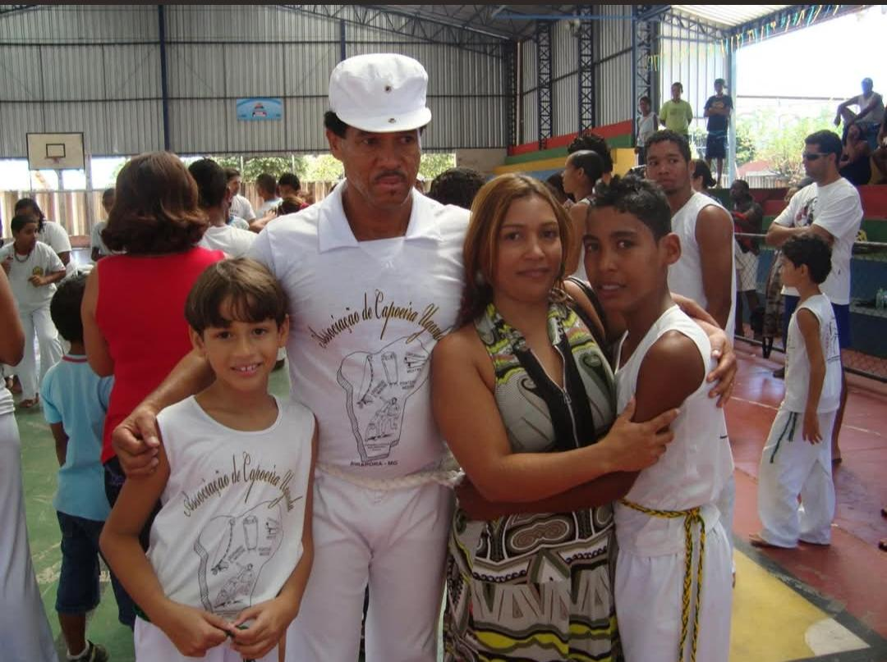

Mestre Cinturinha
Cândido Alécio de Oliveira (Mestre Cinturinha) é piraporense, nascido em março de 1962. Cinturinha é mestre capoeirista, presidente e coordenador da Associação de Capoeira Uganda, fundada em Pirapora-MG em 1991, ainda em funcionamento.
Mestre Cinturinha começou sua formação no esporte aos 17 anos, no período em que foi fuzileiro naval da Marinha do Brasil. Lá, teve oportunidade de aprender com os mestres Cantil e Portugal. Quando no retorno à Pirapora, Cinturinha manteve-se ainda em atividade na capoeira, sob os cuidados dos mestres Boca, Mazim e Zezão (in memoriam). Formou-se como grão-mestre pelas mãos do mestre Boca.
“Eu amo a capoeira. A capoeira é minha vida. Eu trabalho com a capoeira não por viver dela, mas vivo para ela.”
Apesar da paixão, o mestre observa que o esporte enfrenta ainda muito preconceito em ambientes institucionalizados, como as escolas. Onde o esporte deveria ser ensinado como patrimônio cultural, os mestres muitas vezes não têm o seu conhecimento validado institucionalmente, o que dificulta a difusão da prática.
{kind=link}

Mestre Cinturinha